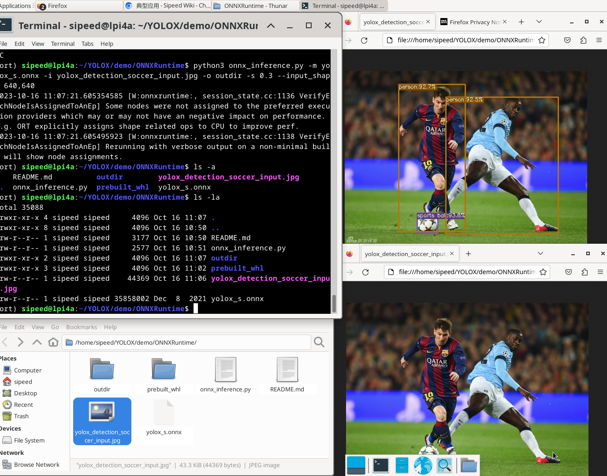

## Yolov5 on LicheeA4 Run Yolov5 on Lichee A4 See if it can works <!-- --> --- <!-- --> ## YOLOX for Object Detection https://riscv.org/blog/2023/07/yolox-for-object-detection/ YOLOX is Okay for work on riscv <!-- --> --- <!-- --> ### Run YOLOX on RSIC-V Licheepi A4 <!-- .center[] --> .center[] <!-- --> --- <!-- -->